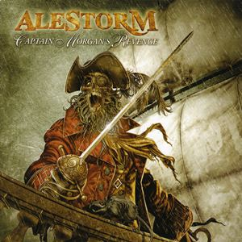
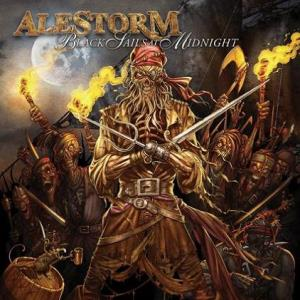
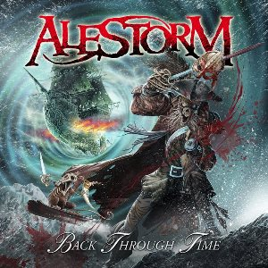
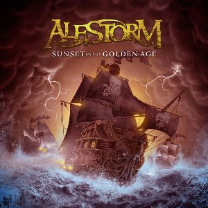

| CAPTAIN MORGAN'S REVENGE (ALBUM - 2008) | Songliste |
|---|---|
|  |
1. Over the Seas 2. Captain Morgan's Revenge 3. The Huntmaster 4. Nancy the Tavern Wench 5. Death Before the Mast 6. Terror on the High Seas 7. Set Sail and Conquer 8. Of Treasure 9. Wenches & Mead 10. Flower of Scotland |
| BLACK SAILS AT MIDNIGHT (ALBUM - 2009) | Songliste |
|---|---|
|  |
1. The Quest 2. Leviathan 3. That Famous Ol' Spiced 4. Keelhauled 5. To the End of our Days 6. Black Sails at Midnight 7. No Quarter 8. Pirate Song 9. Chronicles of Vengeance 10. Wolves of the Sea |
| BACK THROUGH TIME (ALBUM - 2011) | Songliste |
|---|---|
|  |
1. Back Through Time 2. Shipwrecked 3. The Sunk'n Norwegian 4. Midget Saw 5. Buckfast Powersmash 6. Scraping the Barrel 7. Rum 8. Swashbuckled 9. Rumpelkombo 10. Barrett's Privateers 11. Death Throes of the Terrorsquid |
| SUNSET ON THE GOLDEN AGE (ALBUM - 2014) | Songliste |
|---|---|
|  |
1. Walk the Plank 2. Drink 3. Magnetic North 4. 1741 (The Battle of Cartagena) 5. Mead From Hell 6. Surf Squid Warfare 7. Quest for Ships 8. Wooden Leg! 9. Hangover 10. Sunset on the Golden Age |